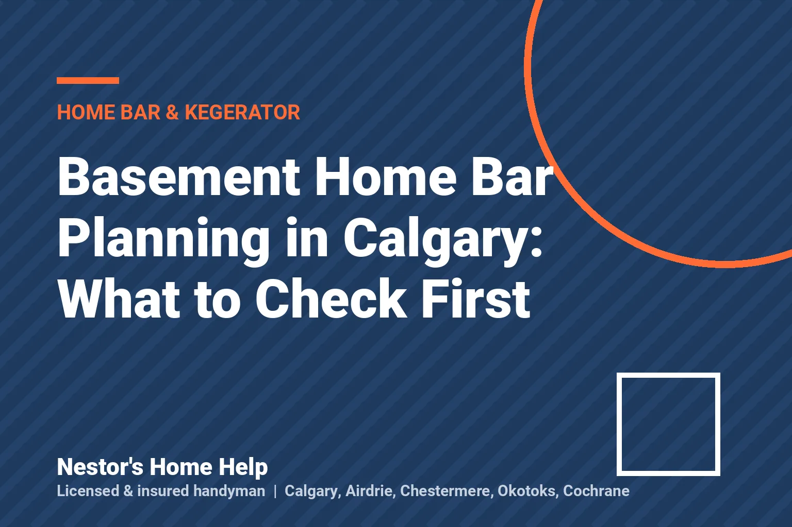

Basement Home Bar Planning in Calgary: What to Check First
By Vitalii Nestorenko · November 26, 2026 · 5 min read
A good basement bar starts with decisions made before any lumber is cut: where the power is, where the heat from the fridge will go, whether you need water, and which parts of the job need a licensed trade or a permit. Get those four right and the rest is carpentry and taste.
I am a mechanical engineer and a professional brewer, and I install home bars and kegerators across Calgary, Airdrie, Chestermere, Okotoks and Cochrane. With the holidays close, many people are planning a bar now so it is ready for guests. Here is the order I work through it.
Start with the beer, not the countertop
Decide what will be on tap or in the fridge first, because the equipment sets the dimensions. A single-tap kegerator, a two-tap unit and a bar fridge all need different openings. If you have not chosen equipment yet, read our kegerator pre-purchase checklist and the guide to keg sizes in Canada, since a keg that does not fit the cabinet is the most common planning mistake.
Measure the actual appliance, including the handle of the faucet and the space needed to lift a keg in and out. Then add clearance for the points below.
Ventilation: where does the heat go?
Every refrigerator pushes heat out of the cabinet. Freestanding kegerators generally vent from the back or sides, and shutting them inside cabinetry traps that hot air. Built-in, front-venting models are designed to be enclosed and exhaust through a grille near the floor, as manufacturers such as Summit describe for their built-in units.
Clearance requirements differ by brand. One manufacturer asks for roughly 4 inches at the rear and sides on standard units, while some built-in models allow a flush fit. The rule I follow is simple: read the installation page of your exact model and build to that, not to a general rule of thumb.
- Keep the front grille on a built-in unit completely unobstructed.
- Leave room behind for the plug and so the unit can be pulled forward for service.
- Do not enclose a freestanding unit unless the manual allows it.
- Allow for a CO2 tank that stands upright and can be reached to shut off.
Power: plan the outlet before the framing
A kegerator, a bar fridge, under-cabinet lighting and a TV can add up on one circuit. Think about where the plugs will be, and keep them reachable without moving the appliance. Check the appliance manual on whether it wants its own circuit.
Here is the honest limit of my service. I replace outlets, switches and light fixtures on existing connections. I do not run new wiring or do permit work. If your bar needs a new circuit or new outlets in the wall, you need a licensed electrician. Under Alberta's Safety Codes system, adding to an electrical system needs an electrical permit, and wiring has to be inspected before the walls are closed. See our post on what a handyman can legally do in Alberta.
Water: wet bar or dry bar?
A dry bar has no sink, and it is by far the simpler project. A wet bar adds a supply line, a drain and usually a vent, which is plumbing work. The City of Calgary lists a separate plumbing permit for new plumbing installations and for extending or altering existing plumbing. That makes a new bar sink a job for a licensed plumber.
My advice for most basements: skip the sink. A small bar fridge, a counter and a nearby bathroom cover most entertaining. If you really want a sink, get the plumber in before the framing is finished, because rough-in work must be inspected before it is covered.
One more point: adding cooking appliances or a full kitchen to a basement can change how the City classifies the work. Confirm with the City of Calgary Planning Services before you design around a stove or cooktop.
Permits: when a basement bar is more than furniture
A bar built from a cabinet, a counter and a freestanding kegerator is furniture, and needs no permit. Developing a basement for the first time is different. The City of Calgary says basement development generally needs a building permit, and electrical and plumbing work have their own permits. Rules also differ between Airdrie, Chestermere, Okotoks and Cochrane, so check with your own municipality.
When in doubt, call the permit office before you start. It costs nothing, and unpermitted work can cause trouble later with insurance and when you sell.
Calgary details that matter in a basement
- Cold floors. Basement slabs run cool. Put a mat or raised base under a kegerator and keep cabinet bottoms off bare concrete.
- Dry winter air. Our low humidity and chinook swings move wood. Use solid anchoring into studs and leave small expansion gaps in countertops.
- Moisture. Check for any dampness or past leaks before you build against an exterior wall.
- Altitude. Calgary is about 1,050 metres up, which can slightly affect the CO2 pressure you set. We cover this in the kegerator CO2 pressure guide.
A planning checklist
- Choose the beer equipment and note its exact dimensions.
- Read its manual for ventilation and clearance.
- Map the outlets and decide if new wiring is needed (electrician if yes).
- Decide wet or dry bar (plumber if wet).
- Ask your municipality whether any permit applies.
- Plan keg access, CO2 tank location and a drip or spill plan.
- Book installation for the tap, shelves, TV and mounting.
Where I can help
My home bar and kegerator installation service covers equipment setup, tap and CO2 connections, mounting shelves, TVs and bar fixtures, and cleanup afterwards. Pricing is C$60 per hour with a C$85 minimum call-out that includes the first hour, materials extra, and the final price is agreed after inspection. You can see the pricing section or send a request through the quote form.
FAQ
Do I need a permit to build a home bar in Calgary?
Furniture-style bars with a freestanding appliance generally do not. First-time basement development, new wiring or new plumbing do involve permits. Confirm your project with the City of Calgary or your municipality.
Can a kegerator go inside a cabinet?
Only if it is a built-in, front-venting model, or if the manual of a freestanding unit allows it. Otherwise it overheats and wastes power.
Is a bar sink worth it?
For most basements, no. It adds a plumbing permit, a plumber and inspections. A nearby bathroom and a bar fridge cover most needs.
Vitalii Nestorenko is the owner of Nestor's Home Help, a licensed and insured handyman business in Calgary. He holds a Master's degree in mechanical engineering and does every job himself.